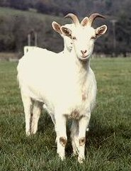

Tuesday, November the 2nd, 2004
back to: title, date or indexes
Is there anything more important in the early days of November than deworming your goat? If you are a pig-fixated person you may wish to differ, but most if not all Hooting Yard readers will want to ensure that their goats are innocent of worms in this critical month in the Capra hircus life-cycle. Here then, are some useful tips. Read them carefully, making notes on a scrap of paper as appropriate, for you will want to refer to the tips once you have ranged across the fields in your big leaking boots to the goat cubicles.

A goat (named Simon Peter) standing in front of another goat (called Pius IX)
If possible, always weigh your goat before deworming it. Use any old scales you can lay your hands on, but preferably ones in which a goat will squat happily for a minute or two. When you have weighed your goat, you will be able to calculate and inject or drench the correct dosage of the dewormer. If you underdose your goat because of failure to weigh it, or because you fecklessly underestimate just how bulky or indeed unbulky it is, this may be a costly mistake. It may lead to your goat developing that most fearsome of conditions, viz. parasite resistance to dewormers! But don't rest on your laurels like a smug goat-person, because an overdose of certain proprietary dewormers can cause health problems, if not for your goat then for you and your immediate family and the neighbours up in the big black house on the hill. All sorts of hideous running sores, boils and suppurations can occur if you overdose your goat, although I am not quite sure how that happens, in a strictly scientific sense. Nevertheless, you do not want to upset those eerie lantern-jawed neighbours of yours after what happened in March, up in the hills, during a thunderstorm, with all that eldritch inhuman howling, do you?
Hooting Yard on the Air, November the 3rd, 2004 : “Tex-mex Jiffy Bag Sprites” (starts around 21:05)